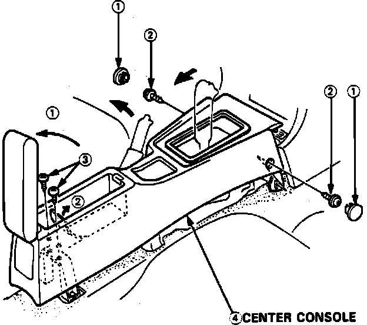
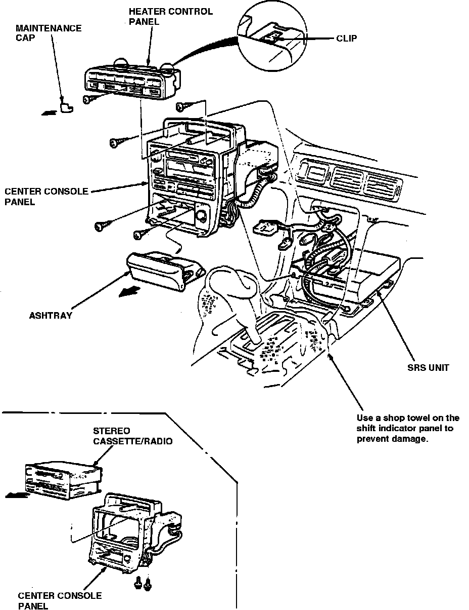
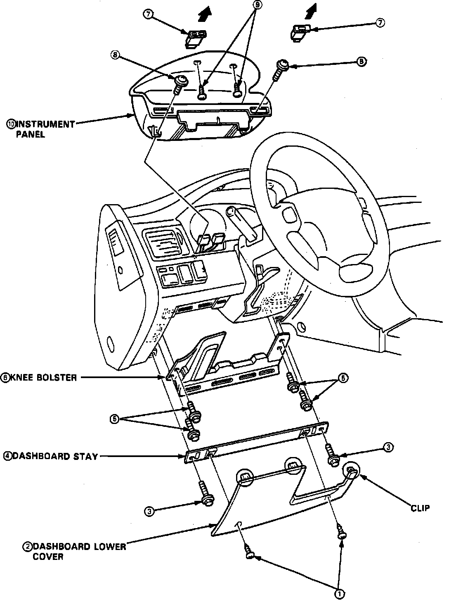
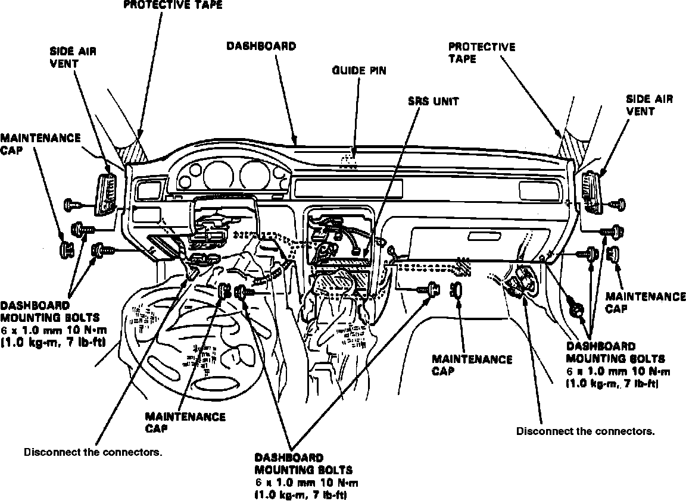

Dashboard / Instrument Panel: Service and Repair
1. Disable coded theft protection system as described in Accessories and Optional Equipment / Antitheft and Alarm Systems / Service and Repair.2. Disable airbag system as described in Air Bags and Seat Belts / Air Bags (Supplemental Restraint Systems) / Airbag System Disarming.
3. Remove front seat assemblies.
Fig. 21 Center Console Removal:

Fig. 22 Center Console Panel Removal:

Fig. 23 Dash Panel Lower Cover, Knee Bolster & Kick Panel Removal:

Fig. 25 Dash Panel Removal:

4. Remove center console, Fig. 21.
5. Remove center console panel, Fig. 22.
6. Remove dash board lower cover, knee bolster and kick panel, Fig. 23.
7. Remove trim panel, glove box and glove box damper, Fig. 24.
8. Wrap steering column in suitable shop towel, then lower steering column.
9. Remove side vent attaching screws, then remove.
10. Disconnect electrical connectors, Fig. 25, then remove panel attaching bolts, remove dash panel.
11. Reverse the procedures to install, noting the following:
a. Ensure that the dashboard fits into the guide pins correctly.
b. Before tightening the dashboard bolts, ensure that wires are free and not pinched.
c. Restore coded theft protection system and rearm airbag.